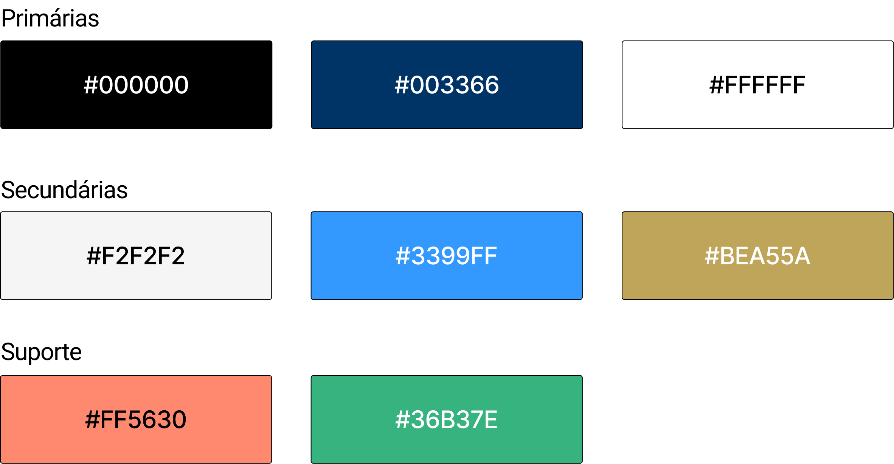
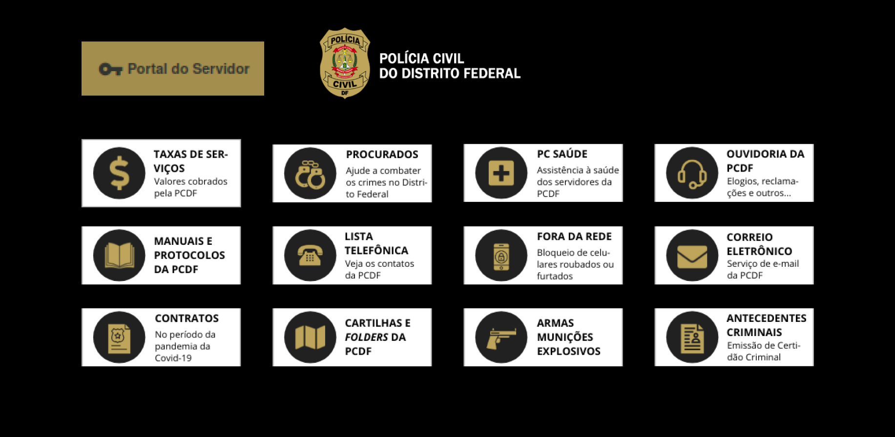
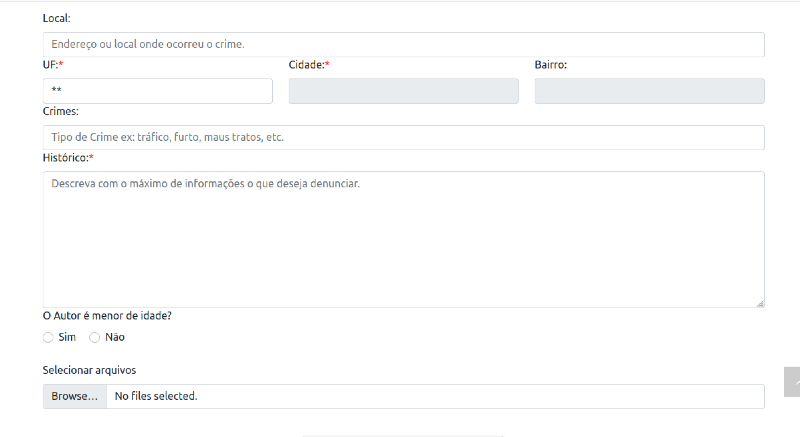
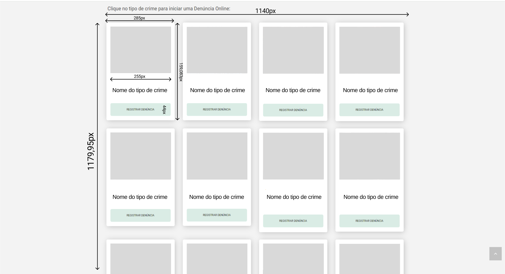

Guia de Estilo
Introdução
De acordo com o livro "Interação Humano-Computador" de Barbosa e Silva(2010), um guia de estilo é um documento que estabelece diretrizes para a criação de interfaces gráficas de usuário consistentes e eficientes. Essas diretrizes geralmente incluem recomendações de design, como layout, tipografia, cores, iconografia, além de orientações sobre interação e usabilidade.
Metodologia
Para elaborar o guia de estilo para o site da Polícia Civil do Distrito Federal (PCDF), adotou-se uma abordagem que se baseou na Avaliação Heurística do site. O desenvolvimento seguiu com foco na simplificação das estruturas das tarefas, na uniformidade e padronização, e na promoção da eficiência do usuário na execução das atividades. Além disso, outros princípios contemplados no documento de Princípios Gerais do Projeto também foram levados em conta.
Objetivo do Guia de Estilo
O objetivo principal de um guia de estilo é promover a coerência e a usabilidade em produtos de software, garantindo uma experiência de usuário mais satisfatória e eficiente. Neste sentido, para melhores práticas será analisado os seguintes elementos:
-
Elementos de interface: Design de telas, visualização de informações, disposição espacial e grid, elementos de interface, janelas, tipografia, símbolos, logo e cores;
-
Elementos de interação: Estilos de interação, seleção de um estilo e aceleradores;
-
Elementos de ação: Preenchimento de campos, seleção e ativação.
Organização e Conteúdo do Guia de Estilo
O Guia de Estilo para o site da PCDF será feito de forma abrangente que estabelece diretrizes claras e consistentes para o design e interação do usuário. Portanto, será utilizado os elementos citados anteriormente.
Público-alvo do Guia de Estilo
O Guia de Estilo da PCDF destina-se aos alunos da disciplina Interação Humano-Computador além de profissionais da PCDF envolvidos no design, desenvolvimento e manutenção do site, incluindo designers de interface e desenvolvedores front-end.
Como utilizar o Guia
Este guia de estilo da PCDF serve como um recurso fundamental para orientar as decisões de design ao longo do projeto da disciplina de Interação Humano-Computador, cobrindo tanto as fases de produção quanto de manutenção. As diretrizes e práticas recomendadas aqui são essenciais para as escolhas de design, garantindo que a interface do usuário atenda aos objetivos do projeto.
Como manter o Guia
A manutenção contínua do Guia de Estilo é vital para sua relevância ao longo do tempo. Isso inclui revisões regulares para atualização conforme as melhores práticas de design, feedback dos usuários para identificar áreas de melhoria, comunicação transparente sobre atualizações e estabelecimento de um sistema de versionamento claro.
Resultados
-
Monitor e Resolução
- Monitor e Resolução mais Comuns: A maioria dos usuários acessa o site da PCDF por meio de monitores de computador com resoluções variadas, incluindo 1920x1080, 1366x768 e 1280x1024 pixels.
- Adaptação Responsiva: O site da PCDF deve garantir uma experiência de usuário consistente em diferentes resoluções de tela, adaptando-se de forma responsiva para garantir a legibilidade e a usabilidade em monitores de diversos tamanhos.
-
Navegadores
- Navegadores Utilizados: Os navegadores mais comuns para acessar o site da PCDF são Google Chrome, Mozilla Firefox, Microsoft Edge e Safari.
- Compatibilidade dos Navegadores: O site da PCDF deve ser testado e otimizado para garantir a compatibilidade com os principais navegadores utilizados pelos usuários, proporcionando uma experiência consistente e sem falhas.
-
Sistema Operacional
- Sistemas Operacionais Predominantes: Os sistemas operacionais mais utilizados para acessar o site da PCDF incluem Windows, macOS e Android.
- Testes de Compatibilidade: É importante realizar testes em diferentes sistemas operacionais para garantir que o site seja compatível e funcione corretamente em todas as plataformas, proporcionando uma experiência de usuário uniforme.
-
Periféricos
- Dispositivos de Entrada mais Comuns: Os dispositivos de entrada mais comuns para acessar o site da PCDF incluem teclado e mouse.
- Experiência de Usuário Adaptada: O site deve ser projetado levando em consideração diferentes dispositivos de entrada, garantindo uma navegação fácil e acessível para usuários que utilizam diferentes periféricos.
-
Conectividade
- Tipos de Conexão à Internet: Os usuários acessam o site da PCDF por meio de diferentes tipos de conexão à internet, incluindo Wi-Fi, 4G/5G e conexões com fio.
-
Contexto de Uso
- Situações de Uso Diversificadas: O site da PCDF é acessado em uma variedade de contextos de uso, incluindo em casa, no trabalho, em dispositivos móveis durante deslocamentos, entre outros.
- Adaptação às Necessidades do Usuário: O site deve ser projetado levando em consideração os diferentes contextos de uso, fornecendo informações relevantes e funcionalidades úteis para atender às necessidades dos usuários em cada situação.
Esses resultados fornecem insights valiosos para orientar o design e o desenvolvimento contínuo do site da PCDF, garantindo uma experiência de usuário otimizada e eficaz em diversas condições e cenários de uso.
Elementos de Interface
Um guia de estilo de interfaceé um conjunto de padrões e diretrizes que garantem a consistência visual e funcional de uma aplicação ou website.
Tipografia

Figura 1: Tipografia
Fonte: Rayene Almeida (criado pelo Figma)
- Fontes: É usado fontes como Roboto para garantir legibilidade e profissionalismo.
- Tamanho Títulos (24px), subtítulos (20px), texto do corpo (16px), notas de rodapé (14px).
- Peso: Os títulos em negrito, subtítulos em semi-negrito e texto do corpo em regular.
- Espaçamento: Linha de 1.5 para texto do corpo, 1.2 para títulos.
Cores

Figura 2: Cores
Fonte: Rayene Almeida (criado pelo Figma)
- Primárias: Preto (#000000) para cabeçalhos e rodapés, azul escuro (#003366), branco (#FFFFFF) para fundos.
- Secundárias: Cinza claro (#F2F2F2) para seções de fundo, azul claro (#3399FF) para botões de chamada para ação e amarelo escuro (#BEA55A) para menu e botão, Verde claro para alguns botões de texto (#36B37E).
- Suporte: Vermelho (#FF5630) para alertas e avisos, verde (#36B37E) para confirmações e sucessos.
Botões e Ícones

Figura 3: Botões
Fonte: Rayene Almeida (criado pelo Figma)
Estilo: Bordas arredondadas com 4px de raio, sombra sutil para elevação.
Ícones:Ícones lineares simples, utilizando a biblioteca FontAwesome ou similar. Tamanho 24px para ícones em botões, 20px para ícones em listas ou navegação.
Formulários

Figura 4: Formulários
Fonte: site PCDF
- Campos de Entrada: Bordas cinza claro (#CCCCCC), foco com borda azul (#3399FF).
- Botões de Rádio e Caixas de Seleção: Azul escuro para itens selecionados, cinza para não selecionados.
- Drop-downs: Fundo branco, borda cinza claro, setas em azul escuro.
Layouts e Grid
- Estrutura: Grid de 12 colunas com espaçamento de 24px entre colunas.
- Margens e Padding: Margens de 16px em dispositivos móveis, 24px em tablets, 32px em desktops.
- Responsividade: Adaptável a diferentes tamanhos de tela com pontos de quebra específicos.

Figura 5: Grid página inicial
Fonte: Figma e site PCDF

Figura 6: Grid página de seleção
Fonte: Figma e site PCDF

Figura 7: Grid página de formulário
Fonte: Rayene Almeida e site PCDF
Elementos de Interação
Os elementos de interação são componentes chave que permitem aos usuários navegar, fornecer informações e executar ações.
Figura 8: Estilos de interação
Fonte: Site PCDF
Estilos de interação
Alertas:
- Uso: Ações críticas (ex: "Excluir", "Resetar")
- Cor de Fundo: Vermelho (#FF5630)
- Texto: Branco (#FFFFFF)
- Fonte: Arial ou Roboto, Negrito, 16px
- Padding: 12px vertical, 20px horizontal
- Bordas Arredondadas: 4px
Links
- Uso: Navegação e acessos rápidos
- Texto: Azul Claro (#3399FF)
- Fonte: Arial ou Roboto, Regular, 16px
Ícones Interativos
- Uso: Navegação e ações rápidas (ex: menus, fechar, buscar)
- Tamanho: 24px (principais), 20px (listas/menus)
- Cor: Sinza escuro (#777777), Azul Escuro (#003366)
Seleção de estilo
- Campos de Seleção (Drop-down)
- Uso: Para escolher entre várias opções.
- Cor de Fundo: Branco (#FFFFFF)
- Borda: 1px sólida, Cinza Claro (#CCCCCC)
- Fonte: Arial ou Roboto, Regular, 16px
- Padding: 10px
- Bordas Arredondadas: 4px

Figura 9: Seleção de Estilo
Fonte: Site PCDF
Aceleradores
Os elementos de ação no site da Polícia Civil do Distrito Federal (PCDF) são componentes interativos que permitem aos usuários realizar tarefas específicas, como enviar formulários, navegar entre páginas, ou acessar informações detalhadas.
Elementos de Ação
Os elementos de ação são componentes cruciais que permitem ao usuário realizar diversas tarefas dentro da interface. Eles incluem:
Preenchimento de Campos
- Descrição: Esses elementos permitem que os usuários forneçam informações relevantes, como em formulários de contato, inscrição, ou busca de ocorrências.
- Exemplos: Campos de texto para nome, e-mail, mensagem, etc.
- Estilo no Site da PCDF: Caixas de texto com rótulos explicativos, consistentes com a identidade visual da PCDF.
Seleção
- Descrição: Permitem que os usuários façam escolhas entre diferentes opções.
- Exemplos: Checkboxes, botões de rádio, menus suspensos.
- Estilo no Site da PCDF: Checkboxes e botões de rádio com rótulos claros e significativos. Menus suspensos com opções bem definidas e descritivas.
Ativação
- Descrição: Esses elementos permitem que os usuários realizem ações específicas, como enviar um formulário, acessar uma página ou baixar um documento.
- Exemplos: Botões de envio, links de navegação, ícones interativos.
- Estilo no Site da PCDF: Botões com textos descritivos e cores consistentes com a identidade visual da PCDF. Links de navegação com texto claro e direto. Ícones representativos das ações que ativam, com feedback visual adequado.
Vocabulário e padrões
-
Terminologia Familiar: Durante o processo de desenvolvimento do protótipo, foi crucial empregar uma linguagem acessível e familiar aos usuários. Evitando o uso excessivo de termos técnicos, algo imnportante para garantir que todos os usuários, incluindo os iniciantes, possam compreender e utilizar a aplicação de forma intuitiva. Dessa forma, promovemos uma experiência de usuário mais inclusiva e eficaz, contribuindo para o sucesso do projeto de design.
-
Tipos de tela (para tarefas comuns): Para garantir consistência e familiaridade na experiência do usuário, é importante que os diferentes tipos de tela para tarefas comuns sigam os padrões definidos nos Elementos de interface de disposição espacial e grid. Esses padrões proporcionam uma estrutura visual coesa e previsível em todo o sistema, facilitando a navegação e a interação dos usuários.
-
Sequências de diálogos: Para garantir uma interação consistente e intuitiva, é fundamental padronizar as sequências de diálogos em todo o sistema. Isso envolve seguir o padrão especificado nos elementos de interação, garantindo que os botões estejam posicionados de maneira semelhante em todas as sequências de diálogos.
Referência Bibliográfica
GNOME Foundation, "GNOME Developer Center." [Online]. Available: https://developer.gnome.org/. [Acesso: 17 de Maio, 2024]. POLÍCIA CIVIL DO DISTRITO FEDERAL. Site oficial da Polícia Civil do Distrito Federal. Disponível em: https://www.pcdf.df.gov.br. [Acesso: 17 de Maio, 2024].
Bibliografia
BARBOSA, S.D.J.; SILVA, B.S. Interação Humano-Computador. Editora Campus-Elsevier, 2010.
Histórico de Versões
| Versão | Descrição | Autor(es) | Data | Revisor(es) | Data de revisão |
|---|---|---|---|---|---|
| 1.0 | Criação do Guia de Estilo | Rayene Almeida | 10/05 | Giovana Barbosa , Renata Quadros | 11/05 |
| 1.1 | Correção do Guia de Estilo | Rayene Almeida | 17/05 | Giovana Barbosa , Renata Quadros | 20/05 |
| 1.2 | Finalização das correções | Rayene Almeida | 18/05 | Giovana Barbosa , Renata Quadros | 20/05 |